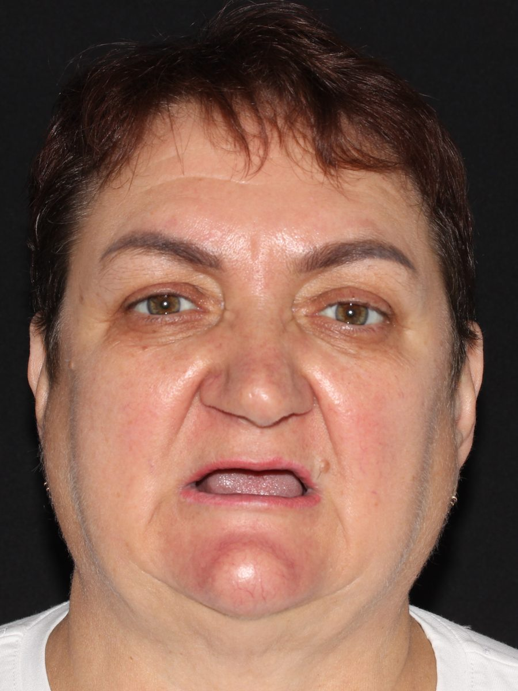
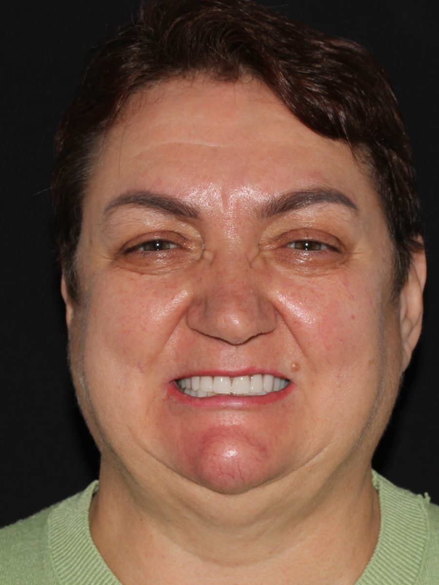

до
после
История пациентки
Восстановили обе челюсти
от 5 250 ₽ в месяц
Импланты и несъёмный протез — в день операции
Полное отсутствие зубов на обеих челюстях. Поставили All‑on‑4 на верхнюю и нижнюю, адаптационный протез зафиксировали сразу, постоянный — через неделю.
Пациентка Е. Ш., 14 → 21 сентября 2026. Расчёт платежа: пакет 189 000 ₽ в рассрочку от клиники на 36 месяцев без переплат.